9 The Periodic Table: chemical periodicity
Trends in atomic structure, physical properties and chemical properties
9 The Periodic Table: chemical periodicity
本章介绍元素在周期表中的位置与电子排布之间的关系，并用核电荷、电子层数、屏蔽效应和结构类型解释周期性。题目覆盖 Period 3 的物理性质、氧化物和氯化物，也延伸到相邻周期元素的比较。
Learning objectives
学完本章后，你应该能够：
- explain how groups and periods relate to electron configurations;
- predict trends in atomic radius, ionic radius, first ionisation energy and electronegativity;
- explain the structures and physical properties of Period 3 elements;
- classify Period 3 oxides as basic, amphoteric or acidic;
- write equations for reactions of oxides and chlorides with water, acids and alkalis;
- use successive ionisation energies to identify groups and oxidation states.
9.1 Periodic table and electron structure
The period number is the number of occupied electron shells. For main-group elements, the group number is related to the number of electrons in the outer shell. Elements in the same group have similar chemical properties because they have similar outer-shell configurations.
Across a period, proton number increases while electrons are added to the same principal shell. The nuclear charge therefore increases, whereas shielding changes much less. Down a group, an extra occupied shell is added at each step, so shielding and the distance of the outer electron from the nucleus increase.
For a main-group atom, first write the electron configuration before predicting an ion: sodium, magnesium and aluminium lose outer electrons to form Na+, Mg2+ and Al3+; phosphorus, sulfur and chlorine can gain electrons in ionic compounds. The periodic-table position predicts common ion charge, but transition-metal charges must be stated separately.
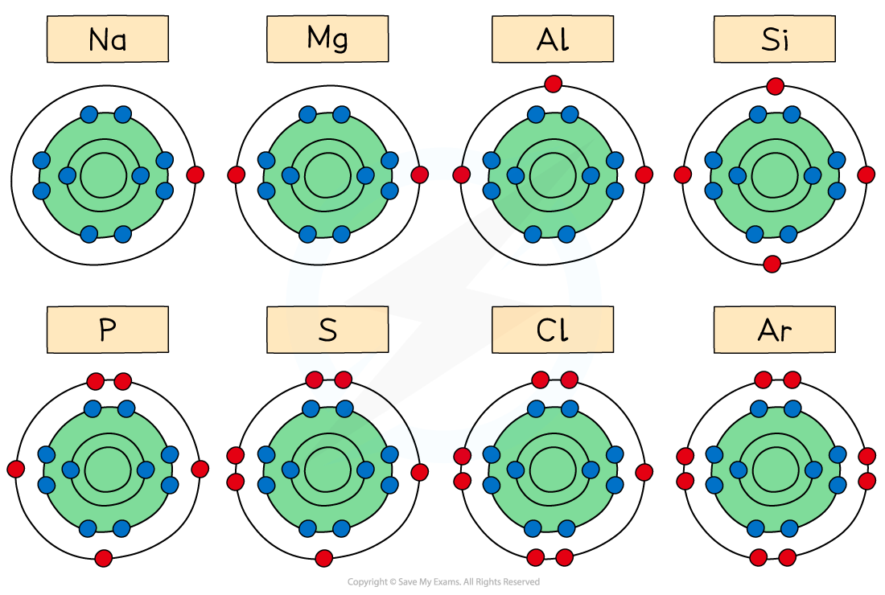
9.2 Atomic radius and ionic radius
Atomic radius generally decreases across a period because the increasing nuclear charge attracts the outer electrons more strongly while they remain in the same shell. It increases down a group because the outer electrons are in shells farther from the nucleus and are more shielded.
For isoelectronic ions, the species with more protons has the smaller radius. For example:
\[\ce{Mg^{2+} < Na+ < Ne < F- < O^{2-}}\]
All five species have ten electrons, but the nuclear charge increases from left to right in this comparison.
When comparing a cation with its atom, the cation is smaller because it has lost an electron shell or because fewer electrons are repelled by one another. An anion is larger than its atom because added electrons increase electron-electron repulsion while nuclear charge is unchanged.
9.3 First ionisation energy
The first ionisation energy is the energy required to remove one mole of electrons from one mole of gaseous atoms to form one mole of gaseous singly charged ions:
\[\ce{X(g) -> X+(g) + e-}\]
It generally increases across a period because nuclear attraction increases and atomic radius decreases. It decreases down a group because the outer electron is farther from the nucleus and more shielded.
There are two important Period 3 exceptions. Aluminium has a lower first ionisation energy than magnesium because the electron removed from Al is in a higher-energy 3p orbital. Sulfur has a lower value than phosphorus because sulfur has a paired 3p electron, so electron–electron repulsion makes removal easier.
The definition must include all four parts: energy required; one mole of electrons; one mole of gaseous atoms; one mole of gaseous 1+ ions. The large jump in successive ionisation energies occurs when removal starts from an inner shell, so it identifies the number of outer electrons.
Successive ionisation energies show the group number from the position of the large jump. A large jump after the second electron, for example, indicates two outer-shell electrons and therefore Group 2.
9.4 Electronegativity
Electronegativity is the ability of an atom to attract the bonding pair of electrons in a covalent bond. It generally increases across a period and decreases down a group. A smaller atom with a greater effective nuclear charge attracts bonding electrons more strongly.
Electronegativity helps explain the change from ionic bonding at the left of Period 3 to more covalent bonding at the right. It also helps predict the polarity and hydrolysis of covalent chlorides.
9.5 Physical properties across Period 3
The melting points of Period 3 elements rise from sodium to magnesium and aluminium because metallic bonding becomes stronger as the number of delocalised electrons and the positive charge of the ions increase. Silicon has a very high melting point because it has a giant covalent structure.
Phosphorus, sulfur, chlorine and argon are simple molecular or atomic substances. Their melting points are much lower than silicon’s. Sulfur has a higher melting point than phosphorus and chlorine because it exists as larger \(\ce{S8}\) molecules with stronger London forces.
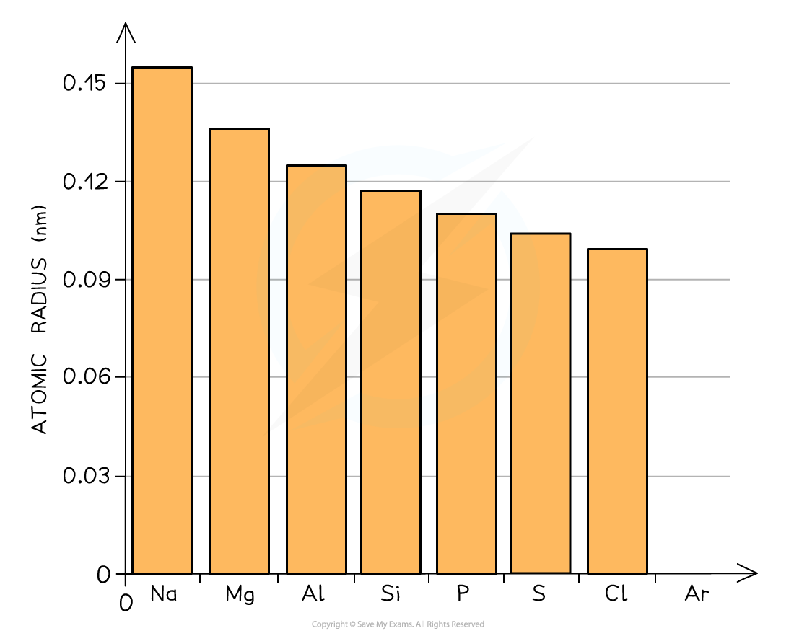
Electrical conductivity also follows structure. Sodium, magnesium and aluminium conduct as metals, silicon is a semiconductor, and the simple molecular substances do not conduct electricity in the solid state.
| Region of Period 3 | Structure | Consequence |
|---|---|---|
| Na, Mg, Al | giant metallic lattice | conduct in solid and liquid states; high melting points from strong metallic bonding |
| Si | giant covalent lattice | very high melting point; semiconductor because some electrons can be promoted into a conduction band |
| P4, S8, Cl2 | simple molecules | low melting points; weak London forces between molecules |
| Ar | monatomic | lowest melting point in this part of the period because it has the weakest London forces |
Do not describe the strong covalent bonds inside P4, S8 or Cl2 as the bonds being broken on melting: it is the weak intermolecular forces that are overcome.
9.6 Oxides across Period 3
The oxides become less ionic and more covalent from left to right:
| Oxide | Structure / bonding | Acid–base character |
|---|---|---|
| \(\ce{Na2O}\), \(\ce{MgO}\) | giant ionic | basic |
| \(\ce{Al2O3}\) | giant lattice with significant covalent character | amphoteric |
| \(\ce{SiO2}\) | giant covalent | acidic oxide |
| \(\ce{P4O10}\), \(\ce{SO2}\), \(\ce{Cl2O7}\) | simple covalent molecules | acidic |
Basic oxides react with water to form hydroxides, while acidic oxides react with water to form acids:
\[\ce{Na2O(s) + H2O(l) -> 2NaOH(aq)}\] \[\ce{SO2(g) + H2O(l) <=> H2SO3(aq)}\]
Aluminium oxide is amphoteric:
\[\ce{Al2O3(s) + 6HCl(aq) -> 2AlCl3(aq) + 3H2O(l)}\] \[\ce{Al2O3(s) + 2OH-(aq) + 3H2O(l) -> 2[Al(OH)4]-(aq)}\]
Silicon dioxide is an acidic oxide but is insoluble in water. It reacts with strong alkalis, for example SiO2(s) + 2OH−(aq) → SiO32−(aq) + H2O(l). Across the period, oxide bonding changes from ionic to covalent as the cation charge increases and size decreases, increasing polarising power.
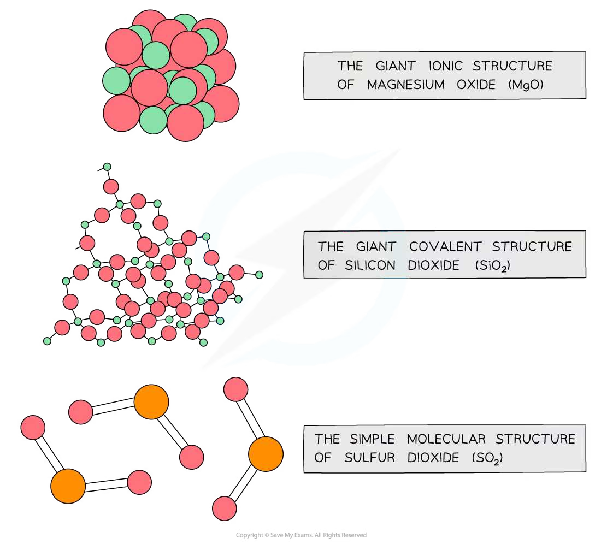
9.7 Chlorides across Period 3
Sodium chloride and magnesium chloride are predominantly ionic solids. Aluminium chloride has substantial covalent character, while SiCl4, PCl3 and PCl5 are simple covalent chlorides. Covalent chlorides hydrolyse because water molecules attack the electron-deficient central atom and HCl is produced, giving acidic solutions/fumes.
Examples:
\[\ce{SiCl4(l) + 2H2O(l) -> SiO2(s) + 4HCl(aq)}\] \[\ce{PCl3(l) + 3H2O(l) -> H3PO3(aq) + 3HCl(aq)}\] \[\ce{PCl5(s) + 4H2O(l) -> H3PO4(aq) + 5HCl(aq)}\]
| Chloride | Structure / behaviour with water | Explanation to use |
|---|---|---|
| NaCl | ionic; dissolves without appreciable hydrolysis | ions are not sufficiently polarising to make water acidic |
| MgCl2 | ionic; aqueous solution is weakly acidic | hydrated Mg2+ polarises O–H bonds in coordinated water |
| AlCl3 | covalent character; hydrolyses to an acidic solution | small, highly charged Al3+ strongly polarises water / chloride bonding |
| SiCl4, PCl3, PCl5 | react vigorously with water, producing HCl | simple covalent molecules with polar bonds and an electron-deficient central atom |
The hydrolysis of SiCl4 is possible because silicon can accept electron density from water and the Si–Cl bonds are polar. Carbon tetrachloride does not hydrolyse appreciably: carbon cannot expand its outer shell in the same way and the C–Cl bonds are less susceptible to nucleophilic attack.
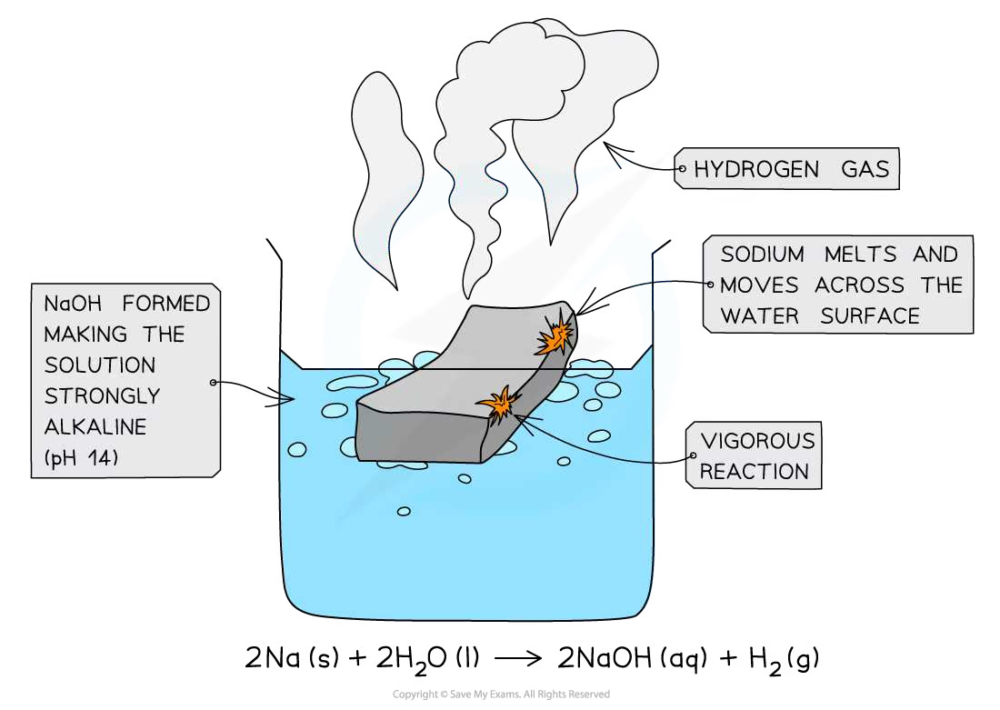
9.8 Using periodicity in unfamiliar elements
The same reasoning can be applied below Period 3. For example, oxides of Group 13 elements become more basic down the group, while oxides of Group 16 elements become more acidic across a period. Always identify the structure first, then relate the physical or chemical property to:
- nuclear charge and electron configuration;
- shell number and shielding;
- ionic, giant covalent or simple molecular structure;
- the polarity and hydrolysis of covalent bonds.
Chapter checklist
Multiple choice questions
9 The Periodic Table: chemical periodicity — Multiple Choice: Easy
Question 1 · Atomic radius · 2.1 Choice Easy Q1
Which statement correctly compares sodium and sulfur?
Show explanation
B. Atomic radius decreases across Period 3. The common ions are Na+ and S2−; sulfur’s ion has an extra electron shell compared with sodium’s ion.
Question 2 · Basic oxide · 2.1 Choice Easy Q2
Magnesium oxide is added to water. Which statement describes the resulting solution?
Show explanation
C. Magnesium oxide is a basic oxide: MgO + H2O → Mg(OH)2, so the solution contains hydroxide ions.
Question 3 · Hydrolysis of phosphorus pentachloride · 2.1 Choice Easy Q3
Which observations are made when a sample of phosphorus chloride, \(\ce{PCl5}\), is added to a beaker of water?
Show explanation
D. \(\ce{PCl5 + 4H2O -> H3PO4 + 5HCl}\). Both products contribute to the acidic observation.
Question 4 · Outer-shell electrons · 2.1 Choice Easy Q4
Which substance contains an atom whose outer shell is incomplete in a simple covalent molecule?
Show explanation
C. Boron in BF3 forms three covalent bonds and has only six electrons around it.
Question 5 · Period 3 physical properties · 2.1 Choice Easy Q5
The three graphs show trends across Period 3. Which important physical property is not represented?
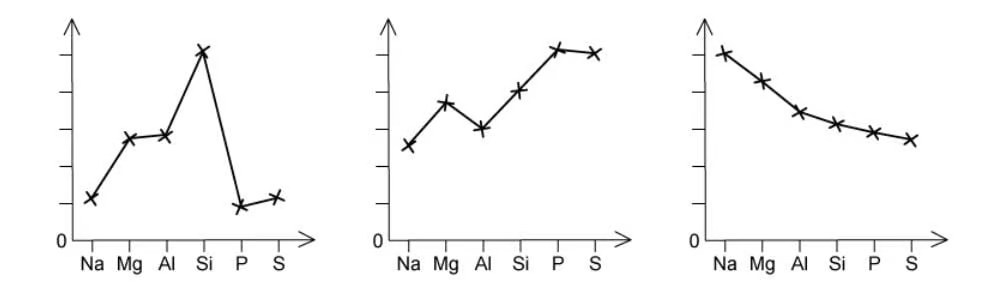
Show explanation
A. The graphs show melting point, first ionisation energy and atomic radius. Conductivity is not shown.
Question 6 · Formula and mole ratio · 2.1 Choice Easy Q6
Silicon reacts with chlorine to produce silicon chloride. How many moles of chlorine are needed to react with 1 mole of silicon?
Show explanation
C. The formula of the chloride is SiCl4, so one mole of silicon is combined with four moles of chlorine atoms.
Question 7 · Oxide stoichiometry · 2.1 Choice Easy Q7
During the manufacture of steel, the impurity \(\ce{P4O10}\) is removed by reacting it with calcium oxide. The only product is calcium phosphate, \(\ce{Ca3(PO4)2}\). How many moles of \(\ce{P4O10}\) react with three moles of calcium oxide?
Show explanation
A. \(\ce{P4O10 + 6CaO -> 2Ca3(PO4)2}\), so three moles of CaO react with 0.5 mol of P4O10.
Question 8 · Acidic chlorides · 2.1 Choice Easy Q8
Which two chlorides give approximately neutral solutions when added to water?
- \(\ce{MgCl2}\) 2. \(\ce{NaCl}\) 3. \(\ce{SiCl4}\)
Show explanation
B. The ionic chlorides MgCl2 and NaCl do not hydrolyse significantly. SiCl4 hydrolyses to give HCl.
Question 9 · Isoelectronic ions · 2.1 Choice Easy Q9
Which is the order of increasing radius for \(\ce{O^{2-}}\), Ne and \(\ce{Mg^{2+}}\)?
Show explanation
C. These species each have ten electrons. More protons attract the same electron cloud more strongly, so Mg2+ is smallest and O2− is largest.
Question 10 · Electronegativity and first ionisation energy · 2.1 Choice Easy Q10
Which graph correctly shows the relative electronegativities and first ionisation energies of Na, Mg, Al and Si?
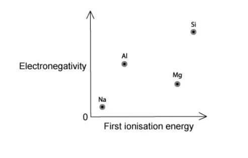
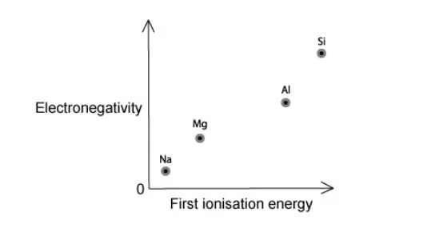
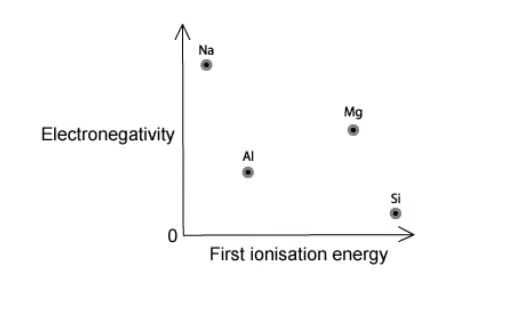
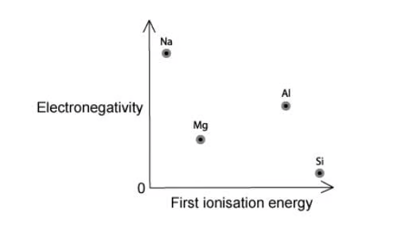
Show explanation
A. Electronegativity increases steadily from Na to Si, while first ionisation energy has the Mg–Al dip because Al loses a 3p electron.
9 The Periodic Table: chemical periodicity — Multiple Choice: Medium
Question 11 · Hydrolysis of Period 3 chlorides · 2.1 Choice Medium Q1
Which Period 3 chloride does not produce hydrogen chloride fumes when added to water?
Show explanation
D. Magnesium chloride is an ionic chloride and dissolves without significant hydrolysis. The other three chlorides hydrolyse and produce HCl.
Question 12 · Melting points of chlorides · 2.1 Choice Medium Q2
Which order gives decreasing melting point for HCl, \(\ce{MgCl2}\), \(\ce{CCl4}\) and \(\ce{S2Cl2}\)?
Show explanation
C. The ionic lattice in MgCl2 gives the highest melting point. Among simple molecular substances, larger molecules generally have stronger London forces.
Question 13 · Consecutive Period 3 elements · 2.1 Choice Medium Q3
X, Y and Z are consecutive Period 3 elements. Y has the highest first ionisation energy and the lowest melting point of the three. Which set is possible?
Show explanation
A. Phosphorus has a local maximum in first ionisation energy and is a simple molecular solid with a low melting point compared with silicon.
Question 14 · Period 4 oxides · 2.1 Choice Medium Q4
Which pair of Period 4 elements forms oxides that give acidic solutions in water?
Show explanation
C. The oxides become more covalent and acidic across the period. Arsenic and selenium form acidic oxides; gallium oxide is amphoteric and germanium oxide is less strongly acidic.
Question 15 · Melting point and electronegativity · 2.1 Choice Medium Q5
Which graph correctly shows the relationship between melting point and electronegativity for Mg, Al, Si and P?
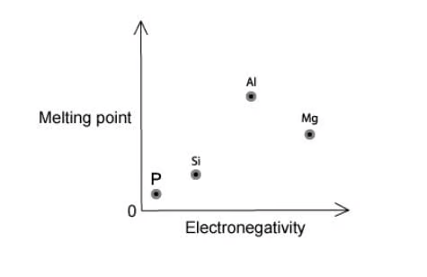
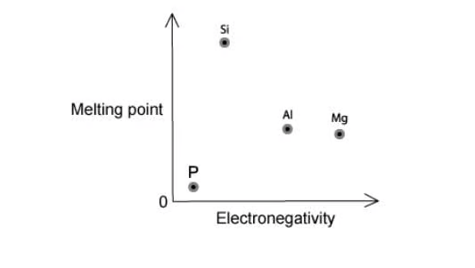
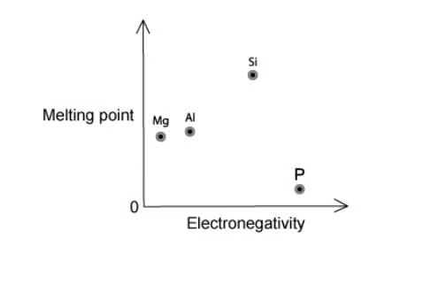
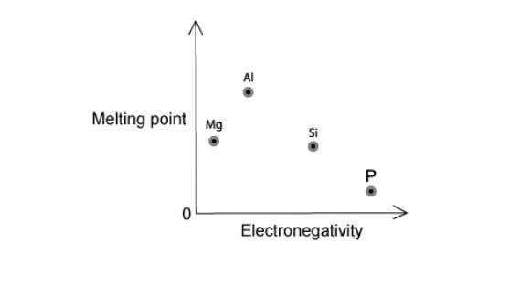
Show explanation
C. Silicon has a giant covalent structure and the highest melting point; phosphorus is simple molecular and has the lowest. Electronegativity increases from Mg to P.
Question 16 · Structure and properties · 2.1 Choice Medium Q6
Which statement about silicon dioxide, sodium chloride and aluminium is correct?
Show explanation
A. The structures are giant covalent, giant ionic and metallic respectively. Delocalised electrons allow aluminium to conduct as a solid.
Question 17 · 3p electrons and acidic oxides · 2.1 Choice Medium Q7
Which combination is correct for sulfur and phosphorus?
Show explanation
A. Sulfur has a paired 3p electron, whereas phosphorus has a 3p3 configuration. Both can form acidic oxides.
9 The Periodic Table: chemical periodicity — Multiple Choice: Hard
Question 18 · Aluminium chloride observations · 2.1 Choice Hard Q1
Which set of observations is inconsistent with aluminium chloride?
Show explanation
A. Aluminium chloride hydrolyses to give an acidic solution, not pH 12. Its covalent character also gives it a much lower melting point than sodium chloride.
Question 19 · Amphoteric aluminium oxide · 2.1 Choice Hard Q2
The original scheme shows the reactions of an unknown element X.
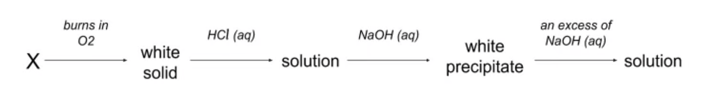
Which element could be X?
Show explanation
C. Aluminium burns to form amphoteric Al2O3. It reacts with acid, then gives Al(OH)3 which dissolves in excess sodium hydroxide.
Question 20 · Successive trends in Group 2 · 2.1 Choice Hard Q3
Four elements are Davy’s elements: Mg, B, Na and Ca. Which element has the third-lowest first ionisation energy in its period and the third-smallest atomic radius in its group?
Show explanation
D. Group 2 elements have the third-lowest first ionisation energy in their periods because the Group 3 p electron is easier to remove. The third-smallest Group 2 radius is the Period 4 member, calcium.
Structured questions
9 The Periodic Table: chemical periodicity — Structured Questions: Easy
Question 1 · Atomic radius and conductivity · 2.1 SQ Easy Q1
Fig. 1.1 shows the electrical conductivity trend across Period 3.
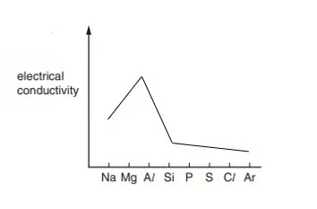
(a) State and explain the general trend in atomic radius across Period 3. [3 marks]
(b) Explain why aluminium has a much higher electrical conductivity than sulfur. Refer to the structure of both elements. [2 marks]
(c) Explain why aluminium has a higher electrical conductivity than magnesium. [2 marks]
(d) The melting points of three successive elements in Period 3 are Al = 660 °C, Si = 1410 °C and P = 44 °C. Explain, referring to structure and bonding, why the melting point of silicon is high and phosphorus is low. [6 marks]
Show mark scheme / model answer
- (a) Atomic radius decreases from Na to Ar. Proton number/nuclear charge increases while electrons are added to the same shell; shielding is similar, so attraction to the outer electrons increases.
- (b) Aluminium has a metallic lattice with delocalised electrons. Sulfur is simple molecular and has no mobile charged particles.
- (c) Aluminium has more delocalised electrons and stronger metallic bonding than magnesium.
- (d) Silicon has a giant covalent lattice with many strong covalent bonds that must be broken. Phosphorus exists as simple molecular P4; only weak London forces between molecules need to be overcome.
Question 2 · Period 3 oxides · 2.1 SQ Easy Q2
Consider the oxides \(\ce{Na2O, MgO, Al2O3, SiO2, P4O10}\) and \(\ce{SO2}\).
The melting points of some oxides from sodium to sulfur are: Na2O 1193 K, MgO 3173 K, Al2O3 2313 K, SiO2 1883 K, P4O10 613 K and SO2 198 K.
(a) State what is broken when Na2O, SiO2 and P4O10 are melted. [3 marks]
(b) Give one oxide that reacts with water to produce a hydroxide, one that produces an acid, and one that has no reaction with water. [3 marks]
(c) For MgO, Al2O3 and SO2, state whether a reaction occurs with aqueous HCl and with aqueous NaOH. [3 marks]
Show mark scheme / model answer
- (a) In Na2O, ionic attractions are broken; in SiO2, covalent bonds are broken; in P4O10, intermolecular forces are overcome.
- (b) Hydroxide: Na2O; acid: SO2; no reaction: SiO2.
- (c) MgO reacts with HCl but not NaOH; Al2O3 reacts with both; SO2 reacts with NaOH but not HCl.
Question 3 · Period 3 chlorides · 2.1 SQ Easy Q3
(a) Write the balanced equation for aluminium reacting with chlorine. [2 marks]
(b) Complete the oxidation numbers of the Period 3 elements in their chlorides: NaCl, MgCl2, AlCl3, SiCl4, PCl3 and SCl2. [4 marks]
(c) Magnesium chloride is dissolved in water. State an observation and predict the pH. [2 marks]
(d) Write the equation for the hydrolysis of phosphorus pentachloride. [2 marks]
Show mark scheme / model answer
- (a) \(\ce{2Al + 3Cl2 -> 2AlCl3}\).
- (b) Na +1, Mg +2, Al +3, Si +4, P +3 and S +2 for the formulas shown.
- (c) It dissolves to give a colourless solution with no fumes; pH is approximately 7.
- (d) \(\ce{PCl5 + 4H2O -> H3PO4 + 5HCl}\).
9 The Periodic Table: chemical periodicity — Structured Questions: Medium
Question 4 · Periodic position and ionisation energy · 2.1 SQ Medium Q1
Fig. 1.1 shows part of the periodic table. Fig. 1.2 shows the first ionisation energies of six consecutive elements, A–F.
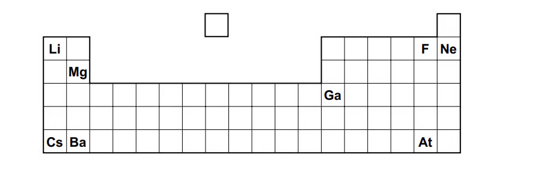
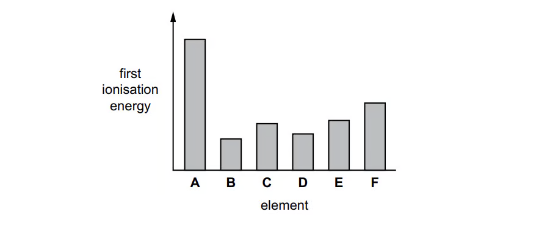
(a)(i) Identify the element whose atom forms a soluble hydroxide and an insoluble sulfate. [1 mark]
(a)(ii) Identify the most volatile element in a group that contains elements in all three states of matter at room temperature and pressure. [1 mark]
(a)(iii) Identify the element that forms the largest cation. [1 mark]
(b) Define first ionisation energy. [2 marks]
(c) Explain why the first ionisation energy of B is lower than that of A in Fig. 1.2. [2 marks]
(d) Fig. 1.3 is a blank graph for the atomic-radius trend across a period. Sketch the trend and explain it. [3 marks]
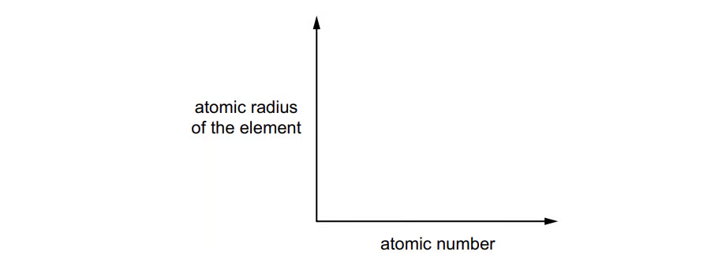
Show mark scheme / model answer
- (a) (i) Mg; (ii) F; (iii) Cs.
- (b) The energy required to remove one mole of electrons from one mole of gaseous atoms to form one mole of gaseous singly charged ions.
- (c) B is at the start of a new period/shell, so its outer electron is farther from the nucleus and more shielded.
- (d) The curve decreases across the period. Nuclear charge increases while electrons enter the same shell, so effective attraction increases.
Question 5 · Classifying Period 3 oxides · 2.1 SQ Medium Q2
(a) Classify each of \(\ce{Na2O, MgO, Al2O3, SiO2, P4O10, SO2}\) as basic, amphoteric or acidic. [3 marks]
(b) Write equations for sodium oxide and sulfur dioxide reacting with water, and state the approximate pH of each solution. [4 marks]
(c) State the oxidation numbers of sodium in \(\ce{Na2O}\) and sulfur in \(\ce{SO2}\). [2 marks]
(d) Explain why sodium oxide has a much higher melting point than sulfur dioxide. [3 marks]
Show mark scheme / model answer
- (a) Basic: Na2O, MgO; amphoteric: Al2O3; acidic: SiO2, P4O10, SO2.
- (b) \(\ce{Na2O + H2O -> 2NaOH}\), alkaline pH; \(\ce{SO2 + H2O <=> H2SO3}\), acidic pH.
- (c) Na is +1; S is +4.
- (d) Sodium oxide is giant ionic, with strong electrostatic attraction throughout the lattice. Sulfur dioxide is simple molecular, so only weak intermolecular forces are overcome.
Question 6 · Melting point and electronegativity · 2.1 SQ Medium Q3
Fig. 3.1 shows Period 3 melting points. Fig. 3.2 is a blank graph for electronegativity.
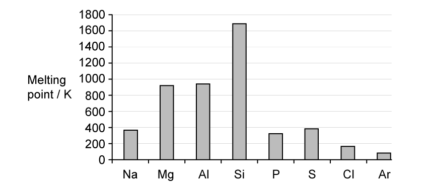
(a) Explain the rise in melting point from sodium to aluminium. [3 marks]
(b) Explain why silicon has a much higher melting point than the other Period 3 elements. [2 marks]
(c) Explain the variation from phosphorus to argon. [3 marks]
(d) Define electronegativity and sketch its trend on Fig. 3.2. [3 marks]
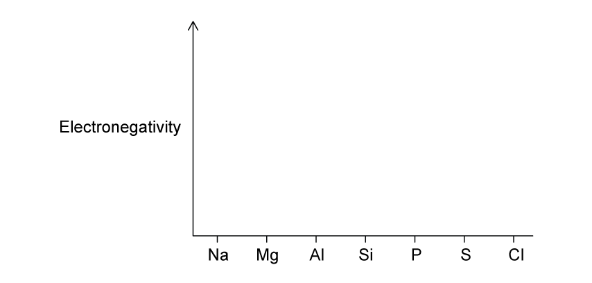
Show mark scheme / model answer
- (a) Metallic bonding strengthens as the number of delocalised electrons and the charge density of the metal ions increase.
- (b) Silicon has a giant covalent structure; many strong covalent bonds must be broken.
- (c) P, S, Cl and Ar are simple molecular/atomic substances. Their melting points depend mainly on London forces; S8 is larger than P4, while chlorine and argon have weaker attractions.
- (d) Electronegativity is the attraction of an atom for the bonding electron pair. It increases from Na to Cl because nuclear charge increases and atomic radius decreases.
Question 7 · Chloride structure and hydrolysis · 2.1 SQ Medium Q4
(a) Write the equation for phosphorus reacting with chlorine to form phosphorus pentachloride. [2 marks]
(b) Explain the high melting point of sodium chloride. [2 marks]
(c) Explain why silicon tetrachloride is a liquid with a low melting point. [2 marks]
(d) Write an equation for the hydrolysis of silicon tetrachloride and state the pH of the final solution. [3 marks]
Show mark scheme / model answer
- (a) \(\ce{P4 + 10Cl2 -> 4PCl5}\).
- (b) Sodium chloride has a giant ionic lattice with strong attraction between oppositely charged ions.
- (c) Silicon tetrachloride is made of simple covalent molecules; only weak London forces act between molecules.
- (d) \(\ce{SiCl4 + 2H2O -> SiO2 + 4HCl}\). The solution is acidic.
9 The Periodic Table: chemical periodicity — Structured Questions: Hard
Question 8 · Acid–base reactions of oxides · 2.1 SQ Hard Q1
(a) Write equations for sodium oxide and sulfur dioxide reacting with water, and state one observation for each. [4 marks]
(b) Write the net ionic equation for sodium silicate reacting with nitric acid to form silicic acid. [2 marks]
(c) Oxide A is amphoteric. Write equations for its reactions with potassium hydroxide and nitric acid. [4 marks]
Show mark scheme / model answer
- (a) \(\ce{Na2O + H2O -> 2NaOH}\), alkaline solution; \(\ce{SO2 + H2O <=> H2SO3}\), acidic solution.
- (b) \(\ce{SiO3^{2-} + 2H+ -> H2SiO3}\).
- (c) For Al2O3: \(\ce{Al2O3 + 2OH- + 3H2O -> 2[Al(OH)4]-}\); \(\ce{Al2O3 + 6HNO3 -> 2Al(NO3)3 + 3H2O}\).
Question 9 · Phosphorus(V) oxide · 2.1 SQ Hard Q2
(a) Describe the change in acid–base character of the Period 3 oxides from sodium to chlorine and explain it using electronegativity. [4 marks]
(b) Write the equation for phosphorus(V) oxide reacting with water and state the pH of the product. Explain why phosphorus(V) oxide has a low melting point. [4 marks]
(c) Write the equation for phosphorus(V) oxide reacting with aqueous sodium hydroxide. State whether phosphorus is oxidised or reduced in this reaction. [3 marks]
Show mark scheme / model answer
- (a) The oxides change from basic through amphoteric to acidic. Electronegativity increases across the period, so bonding becomes more covalent and the oxides are less able to supply oxide ions; covalent oxides form acidic solutions.
- (b) \(\ce{P4O10 + 6H2O -> 4H3PO4}\); pH is below 7. It is simple molecular, so only weak intermolecular forces act between molecules.
- (c) \(\ce{P4O10 + 12NaOH -> 4Na3PO4 + 6H2O}\). Phosphorus remains at +5, so this is not a redox reaction.
Question 10 · Silicon chloride and silicon dioxide · 2.1 SQ Hard Q3
(a) Silicon reacts with chlorine to form silicon tetrachloride. Describe the bonding and shape in a molecule of \(\ce{SiCl4}\). [3 marks]
(b) Explain why \(\ce{SiCl4}\) hydrolyses but \(\ce{CCl4}\) does not hydrolyse appreciably. [4 marks]
(c) Write an equation showing the acidic reaction of silicon dioxide with aqueous sodium hydroxide. Explain why silicon dioxide does not react with hydrochloric acid. [4 marks]
Show mark scheme / model answer
- (a) Four polar covalent Si–Cl bonds; tetrahedral shape with bond angle approximately 109.5°.
- (b) Silicon can accept electron density from water and can expand its valence shell in the hydrolysis process. Carbon is smaller and cannot expand its outer shell; the C–Cl bonds are not attacked appreciably by water.
- (c) \(\ce{SiO2 + 2OH- -> SiO3^{2-} + H2O}\) (or the molecular equation with sodium hydroxide). Silicon dioxide is an acidic covalent oxide and has no basic oxide ions/available basic sites to neutralise hydrochloric acid.
Original question PDFs
页面中的图表使用 PDF 内独立嵌入的图像对象提取，不使用整页截图；PDF 内为矢量绘制且没有独立图像对象的图形不强行转换。
- 2.1 The Periodic Table: Chemical Periodicity - Choice - Easy
- 2.1 The Periodic Table: Chemical Periodicity - Choice - Medium
- 2.1 The Periodic Table: Chemical Periodicity - Choice - Hard
- 2.1 The Periodic Table: Chemical Periodicity - Structured Questions - Easy
- 2.1 The Periodic Table: Chemical Periodicity - Structured Questions - Medium
- 2.1 The Periodic Table: Chemical Periodicity - Structured Questions - Hard